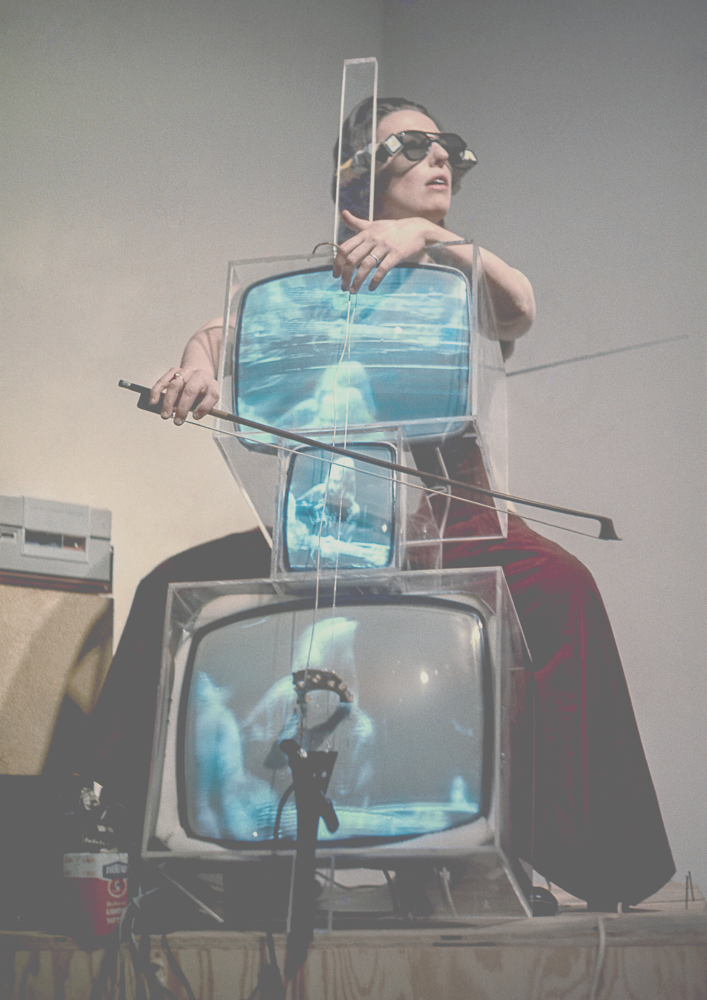

TV Cello is a 1974 sculpture by Nam June Paik.

We start with the Body
"The body of the instrument is made from three cathode-ray tubes installed inside acrylic boxes that also support
a cello bridge, tailpiece and strings"
Art Gallery of NSW
The original TV Cello was created for celloist Charlotte Moorman to perform. Moorman played the instrument by plucking strings and tapping the acrylic box to create sound. Throughout his career, Paik created Ten versions of TV Cello.
Charlotte Moorman playing the Tv Cello
References
TV Cello,
Nam June Paik,
Charlotte Moorman performs with Paik's 'TV cello'